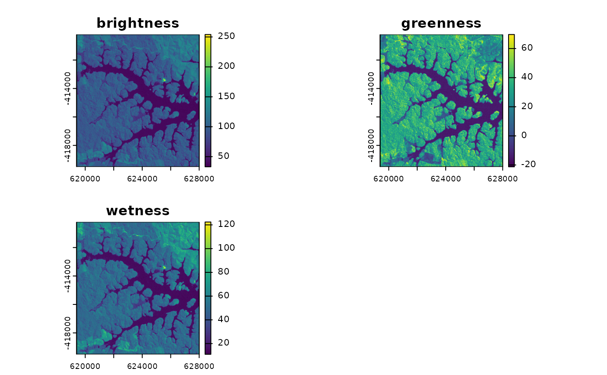

Calculates brightness, greenness and wetness from multispectral imagery. Currently implemented Landsat 4 TM, Landsat 5 TM, Landsat 7ETM+, Landsat 8 OLI, MODIS, QuickBird, Spot5 and RapidEye.
Arguments
- img
SpatRaster. Input image. Band order must correspond to sensor specifications (see Details and Examples)
- sat
Character. Sensor; one of: c("Landsat4TM", "Landsat5TM", "Landsat7ETM", "Landsat8OLI", "MODIS", "QuickBird", "Spot5", "RapidEye"). Case is irrelevant.
- ...
Further arguments passed to writeRaster.
Details
Currently implemented: Landsat 4 TM, Landsat 5 TM, Landsat 7ETM+, Landsat 8 OLI, MODIS, QuickBird, Spot5, RapdiEye. Input data must be in top of atmosphere reflectance. Moreover, bands must be provided in ascending order as listed in the table below. Irrelevant bands, such as Landsat Thermal Bands or QuickBird/Spot5 Panchromatic Bands must be omitted. Required bands are:
| sat | bands | coefficients | data unit |
| Landsat4TM | 1,2,3,4,5,7 | Crist 1985 | reflectance |
| Landsat5TM | 1,2,3,4,5,7 | Crist 1985 | reflectance |
| Landsat7ETM | 1,2,3,4,5,7 | Huang 2002 | reflectance |
| Landsat8OLI | 2,3,4,5,6,7 | Baig 2014 | reflectance |
| MODIS | 1,2,3,4,5,6,7 | Lobser 2007 | reflectance |
| QuickBird | 2,3,4,5 | Yarbrough 2005 | reflectance |
| Spot5 | 2,3,4,5 | Ivtis 2008 | reflectance |
| RapidEye | 1,2,3,4,5 | Schoenert 2014 | reflectance |
References
Crist (1985) "A TM Tasseled Cap Equivalent Transformation for Reflectance Factor Data." Remote Sensing of Environment 17 (3): 301-306
Huang et al. (2002) "Derivation of a Tasselled Cap Transformation Based on Landsat 7 At-Satellite Reflectance." International Journal of Remote Sensing 23 (8): 1741-1748
Baig et al. (2014) "Derivation of a Tasselled Cap Transformation Based on Landsat 8 At-Satellite Reflectance." Remote Sensing Letters 5 (5): 423-431.
Lobser et al. (2007) "MODIS Tasselled Cap: Land Cover Characteristics Expressed through Transformed MODIS Data." International Journal of Remote Sensing 28 (22): 5079-5101.
Yarbrough et al. (2005) "QuickBird 2 tasseled cap transform coefficients: a comparison of derivation methods." Pecora 16 Global Priorities in Land Remote Sensing: 23-27.
Ivits et al. (2008) "Orthogonal transformation of segmented SPOT5 images." Photogrammetric Engineering & Remote Sensing 74 (11): 1351-1364.
Schoenert et al. (2014) "Derivation of tasseled cap coefficients for RapidEye data." Earth Resources and Environmental Remote Sensing/GIS Applications V (9245): 92450Qs.
Examples
library(terra)
## Run tasseled cap (exclude thermal band 6)
lsat_tc <- tasseledCap(lsat[[c(1:5,7)]], sat = "Landsat5TM")
lsat_tc
#> class : SpatRaster
#> dimensions : 310, 287, 3 (nrow, ncol, nlyr)
#> resolution : 30, 30 (x, y)
#> extent : 619395, 628005, -419505, -410205 (xmin, xmax, ymin, ymax)
#> coord. ref. : +proj=utm +zone=22 +ellps=WGS84 +towgs84=0,0,0,0,0,0,0 +units=m +no_defs
#> source(s) : memory
#> names : brightness, greenness, wetness
#> min values : 33.0776, -21.2454, 10.9682
#> max values : 254.0931, 69.6422, 122.4285
plot(lsat_tc)
